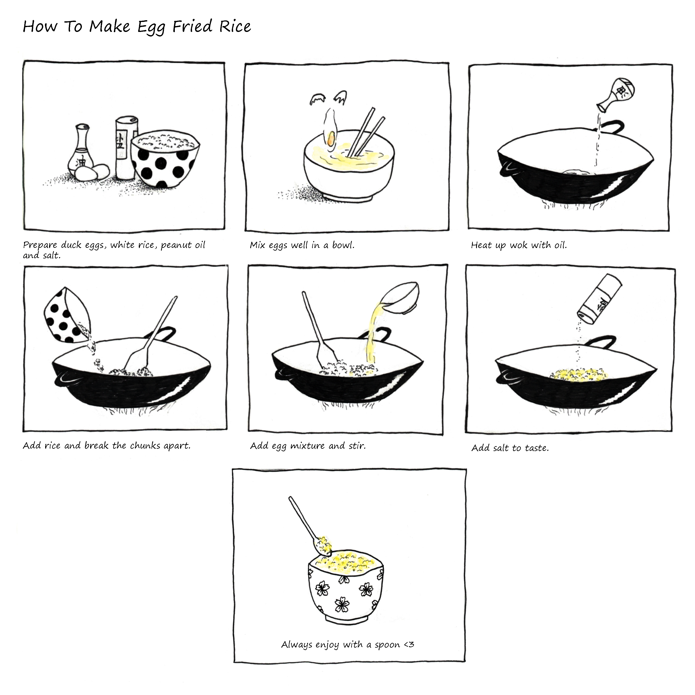
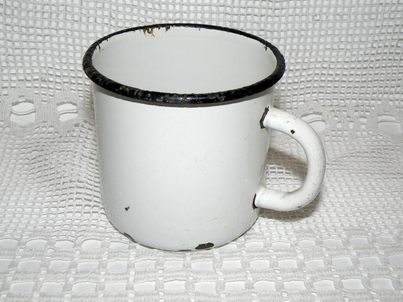

HOME
This is my favorite comfort food of all time: 4 ingredients egg fried rice by my grandmother.
I grew up in my grandparent's house as a child, and my grandmother makes the best family recipes. She will make this dish for me whenever I’m hungry, because it is so easy to make and yet so delicious. Every time I try to recreate this dish, it never tastes as good and when she makes it. The key is to use duck eggs and cook it on a gas stove with a wok. All though we live in different countries now, her dishes will always hold a special place in my heart, and it will always make me feel like I’m home.
MUSEUM
Object: Military Metal Mug
Place of origin: China (manufactured)
Date: Unknown
Artist/Maker: Unknown/Mass produced
Material and techniques: metal, enamel (finish)
The metal mug is a drinking mug made of metal and with white enamel finish. During the World Wars era, these mugs, or any type of dishes that are made with similar materials, are used for everything because of their durability and sturdiness in military campaigns. The mug is usually included in the mess kit, which is a cookware collection for camping and backpacking.
In Chinese culture, these mugs can still be found in the kitchen today, especially in older people’s home. Their practicality and their low price are the main reason of their popularity. Today, these mugs are brought back to furniture and kitchenware stores in Western culture. People purchase them for their minimalistic design and the retro aesthetic. They are also popular in backpacking and camping communities, because they are solid and light to carry. The mug marks a significant period of wars and survival in human history. It also shows the spirit of working-class people during that time.
DIGITAL 2.0

Janet Sun. Glitched Sadness. Photo manipulation.
My piece of gif is called “Glitched Sadness”. It features early windows system designs, because I think that Windows 95 is such a classic when it comes to the topic of “post internet”. My inspiration came from “vaporwave”, a popular visual art style that started in the early 2010s. Vaporwave features neon colors, web design from early 90s and glitch art. I’ve always loved vaporwave aesthetic for its colors and its surrealism. I think that this part of the popular culture perfectly represents people our age, who grew up with the influence of early computer technologies and early electronic music.
Reference: "How Vaporwave Was Created Then Destroyed by the Internet". https://www.esquire.com/entertainment/music/a47793/what-happened-to-vaporwave/
BORDERLANDS

Banksy. Children with Paradise Landscape, 2005 Bethlehem, Palestine.
“Children with Paradise Landscape” is an illustration of two children playing with bucket and shovels, and a “broken” section in the grey wall revealing a photorealistic image of a tropical beach with beach, blue sky, palm tree and the ocean. The street art is created by Banksy, painted on the wall in Palestine which separates it from Israel.
The wall in Palestine is constructed by the government of Israel. The border caused the forceful displacement of over 750 000 Palestinian citizens and the destruction of over 500 towns and agricultural lands. Although that the Israelis government claim that the wall is built against terrorism, the Palestinians side believes that its purpose is racial segregation. The artwork emphasized on the toll that political conflict took on the innocents.
Reference: "The Art Story: Banksy". https://www.theartstory.org/artist/banksy/artworks/